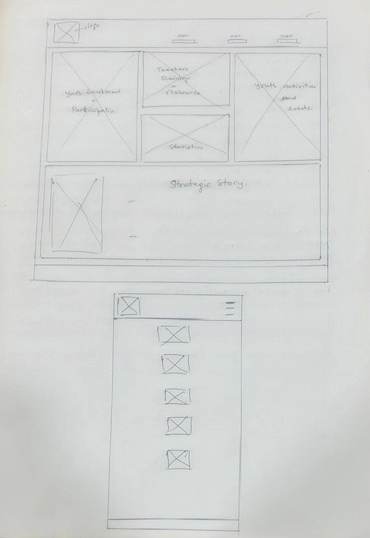

-
Site Name
The site name is “DRC Kinshasa Seminaries & Institutes Coordination.” This website will serve as the official communication and resource hub for the DRC Kinshasa Seminaries and Institutes Coordination, where I serve as a Coordinator. The name clearly identifies the organization, its purpose, and the area it serves, making it easy for students, teachers, and leaders to recognize and access relevant information.
-
Site Purpose
The purpose of this website is to provide a centralized digital platform that supports Seminary and Institute students, instructors, parents, and Church leaders throughout the DRC Kinshasa Coordination.
-
Scenarios
The following are some of the questions site visitor, the organization's target audience, may ask:
How to enroll to Seminary?
How to enroll at the Institute of Religion?
What is the different classes' schedule?
-
Color Scheme
Dark blue for the header background (including some header)
Orange for the footer background
White for the text on the background
Black for the text in the main
-
Typography
We will use Arial, Helvetica, sans-serif as the site font.
-
Wireframes
